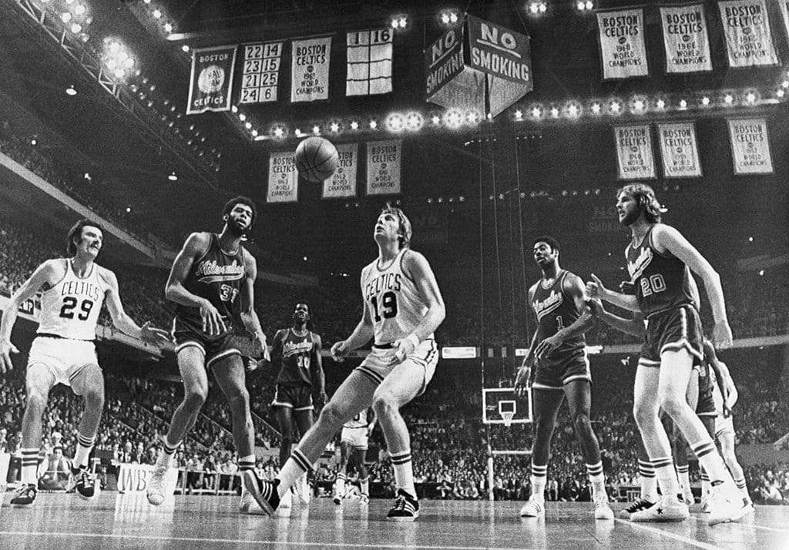
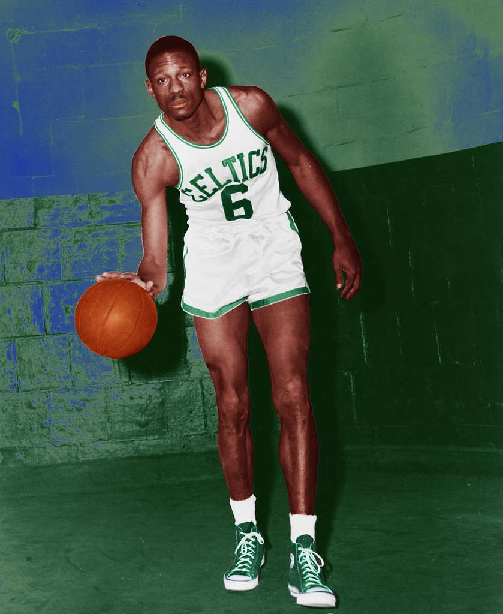
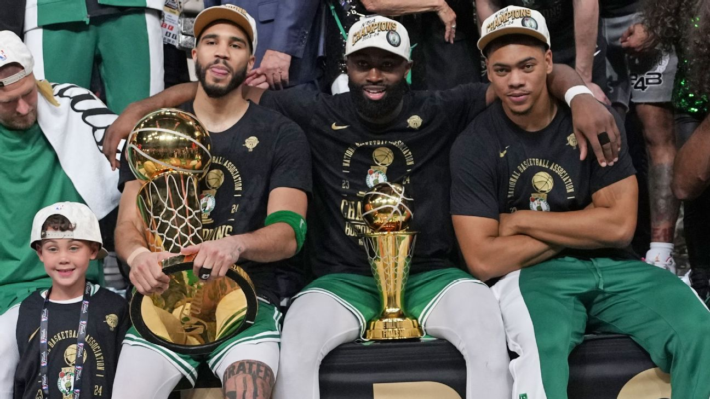

<!DOCTYPE html>
<html>
  <body>
  </body>
</html>
  <!DOCTYPE html>
<html lang="en">
<head>
    <meta charset="UTF-8">
    <meta name="viewport" content="width=device-width, initial-scale=1.0">
    <title>Boston Celtics History</title>
    <link rel="stylesheet" href="style.css">
</head>
<body>

    <header>
        <h1>Boston Celtics</h1>
        <p>One of the Most Successful Teams in NBA History</p>
    </header>

    <section>
        <h2>Team Origin</h2>
        <p>
            The Boston Celtics were founded in 1946 by Walter A. Brown.
            The team was named "Celtics" to honor Boston's strong Irish heritage.
            They were one of the original professional basketball franchises and
            became part of the NBA in 1949.
        </p>
    </section>

    <section>
        <h2>Championship Achievements</h2>
        <p>
            The Celtics have won 18 NBA Championships, the most in NBA history.
        </p>

        <ul>
            <li>1957</li>
            <li>1959</li>
            <li>1960</li>
            <li>1961</li>
            <li>1962</li>
            <li>1963</li>
            <li>1964</li>
            <li>1965</li>
            <li>1966</li>
            <li>1968</li>
            <li>1969</li>
            <li>1974</li>
            <li>1976</li>
            <li>1981</li>
            <li>1984</li>
            <li>1986</li>
            <li>2008</li>
            <li>2024</li>
        </ul>
    </section>

    <section>
        <h2>Best Eras of the Celtics</h2>

        <h3>Bill Russell Era (1957-1969)</h3>
      
        <p>photo from picryl.com</p>
       
      <p>   The Celtics dominated the NBA, winning 11 championships in 13 seasons.
            This is considered one of the greatest dynasties in sports history.
        </p>

        <h3>Larry Bird Era (1980s)</h3>
        <p>
            Led by Larry Bird, the Celtics won NBA Championships in 1981, 1984,
            and 1986 and were one of the strongest teams of the decade.
        </p>

        <h3>Big Three Era (2008)</h3>
        <p>
            Paul Pierce, Kevin Garnett, and Ray Allen led the Celtics to the
            2008 NBA Championship.
        </p>

        <h3>Modern Era (2024)</h3>
        <p>
            Led by Jayson Tatum and Jaylen Brown, the Celtics won their
            18th NBA Championship in 2024.
        </p>
    </section>

    <section>
        <h2>Legendary Celtics Players</h2>

        <div class="player">
            <h3>Bill Russell</h3>
            <p>11-time NBA Champion and one of the greatest defenders ever.</p>
        </div>

        <div class="player">
            <h3>Larry Bird</h3>
            <p>Three-time NBA Champion and one of basketball's greatest players.</p>
        </div>

        <div class="player">
            <h3>Bob Cousy</h3>
            <p>Hall of Fame point guard known for his incredible passing.</p>
        </div>

        <div class="player">
            <h3>John Havlicek</h3>
            <p>Eight-time NBA Champion and Celtics legend.</p>
        </div>

        <div class="player">
            <h3>Paul Pierce</h3>
            <p>2008 NBA Champion and one of the greatest Celtics scorers.</p>
        </div>

        <div class="player">
            <h3>Jayson Tatum</h3>
            <p>Modern Celtics superstar and key member of the 2024 championship team.</p>
          
          <p>photo published by ESPN</p>
        </div>
    </section>

    <footer>
        <p>Boston Celtics Educational Information Page</p>
    </footer>

</body>
</html>